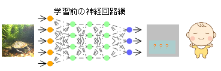
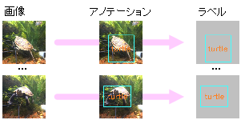
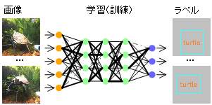
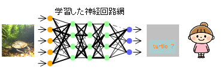

AIでカメを検出する
はじめに（予備知識）
- 物体検出を行う有名なAI深層学習モデルにYOLOがあるが、YOLOには開発チームの異なる多くのバージョンが存在する。
2015 2016 2017 2018 2019 2020 2021 2022 2023 2024 +-----+-----+-----+-----+-----+-----+-----+-----+-----+----- v1 v2 v3 Joseph Redmon氏 v4 v7 v9 Alexey Bochkovskiy氏、Chien-Yao Wang氏チーム v5 v8 Ultralyticsチーム v6 Meituanチーム v10 精華大学チーム- 近年は主にChien-Yao Wang氏チームとUltralyticsチームが最新バージョンの公開を競っている印象がある。
- 性能と使い勝手の両方において先行バージョンの良いところを取り入れる形で進化しているため、基本的に新しいバージョンほど高性能で使い勝手が良いが、 実用的な観点では、2020年のYOLO v5以降は使い勝手が似ており、YOLOのバージョンの違いよりも用意する学習データの違いが最終的な検出性能を左右する。
- 最近のYOLOは、当初からの物体検出にとどまらず、対象物の領域検出や追跡またヒトの姿勢推定などもサポートしている。
- 歴代のYOLOには、MicrosoftのCOCOデータセットを学習させた学習済モデルが付属しているが、COCOデータセットにカメが含まれていないため、 自前でカメを学習させたモデルを作成しない限り、カメを検出することができない。試しにCOCO学習済モデルで検出させるとイシガメを「bird」と誤って検出した。
- ここでは我が家のイシガメを学習させた物体検出モデルを作成して検出してみる。
- 使用するAIモデルは、2023年にUltralyticsチームが公開したYOLO v8の最新版ver8.2（2024年9月時点）。
- YOLO v8はUltralytics版YOLO公式サイト（2024年9月時点）の説明にしたがってインストール・学習（訓練）・検出（推論）する。
物体検出AIモデルの準備
- 
-
- 物体検出を行うAI深層学習モデル「YOLO」を準備する。
- YOLOはカメを学習していない脳（神経回路網）モデルのため、カメを初めて見る赤ちゃんと同じでそれを「カメ」と認識することができない。
YOLO v8のインストール方法
- YOLO v8をインストールする。コマンド1発でインストールできる。
pip install ultralytics- 2024年9月時点ではYOLO ver8.2.86がインストールされた。
- 必要に応じてPython仮想環境およびPyTorch環境（CUDAを含む）を用意してからインストールする。
学習データの準備
- 
-
- どれがカメであるかを学習するためのデータ（画像とラベル）を準備する。
- 撮影した一枚一枚の画像に対して、画像中のどこにカメが映っているかを指定して、ラベルデータを作成する。この作業をアノテーションと呼ぶ。
画像とラベルを準備する方法
- 撮影映像からフレーム画像を取り出し、対象物の映っているフレームを選別する。
PhotoTools65の[VideoFrames]は映像からFPS値を指定して取り出したフレーム画像を連番ファイル名で保存できる。

- 選別したフレーム画像から学習用画像を切り出しサイズを調整する。YOLOの学習用画像は640x640サイズにしておくのが好都合なので、
フレーム画像から対象物の映っている正方形領域を切り出し、切り出した画像を640x640サイズに調整する。
PhotoTools65の[PhotoCrop]は写真または映像を指定領域で切り抜くことができるが、写真切り抜き時に元画像に上書き保存できるため効率的に切り出せる。
また、PhotoTools65の[MultiPhotoResize]は、複数写真を指定サイズに収まるように一括でリサイズできる。


- 物体検出用のアノテーションを実行する。 専用のアノテーションツールを利用して、画像ごとに対象物の名前（実際には対象物番号）と矩形座標が書かれたラベルデータを作成する。 多くのアノテーションツールがあり好みで選べば良いが、YOLO形式のラベルデータを作成できるツールが便利である。
- 画像とラベルを、学習用と学習状況検証用におおむね8:2の比率で分けて、以下の例に示すようなフォルダ構成で格納する。
画像格納フォルダパスのimagesをlabelsに置き換えるとラベル格納フォルダパスになるフォルダ構成になっていれば良い。
C:/dev/yolo/data/ +- images/ | +- train/ <- 学習用画像格納フォルダ C:\dev\yolo\data\images\train\ | +- val/ <- 学習状況検証用画像格納フォルダ C:\dev\yolo\data\images\val\ +- labels/ +- train/ <- 学習用ラベル格納フォルダ C:\dev\yolo\data\labels\train\ +- val/ <- 学習状況検証用ラベル格納フォルダ C:\dev\yolo\data\labels\val\ - 学習用の設定ファイル[mydata.yaml]をテキストエディタで作成する（以下は例）。
path: C:\dev\yolo\data # train,val共通パス train: images\train # 学習用画像フォルダ val: images\val # 学習状況検証用画像フォルダ nc: 4 # クラス数（対象物の数） names: ['turtle','fish','shrimp','snail'] # クラス名（対象物の名前）
学習（訓練）
- 
-
- 用意したデータ（画像＋ラベル）を使って脳（神経回路網）モデルを繰り返し訓練（学習）する。
- 繰り返し訓練することにより、神経回路網のシナプス結合の強さ（重み）が徐々に調整され、入力画像のどこにカメが映っているかを認識し出力できるようになる。
用意したデータを使って訓練する方法
- テキストエディタで訓練スクリプト[train.py]を作成する。
from ultralytics import YOLO if __name__ == '__main__': model = YOLO("yolov8n.pt") results = model.train(data='mydata.yaml', epochs=100, imgsz=640)- YOLO v8にはサイズおよび精度の異なる5種類のモデルn,s,m,l,xがあり、この順にサイズが大きくなり処理時間が長くなる。 ここでは最も小さいnモデル（yolov8n.pt）をもとに転移学習している。yolov8s.pt、yolov8m.ptなど適宜使用するモデルを指定する。
- PC環境によっては、batchやworkersの値を明示的に指定する必要がある（例、"batch=8, workers=4"）。
- 訓練スクリプト[train.py]を実行する。
python train.py- 指定したモデルが無い場合は最初にダウンロードされる。yolov8n.ptは6.24MB、yolov8s.ptは21.5MB、yolov8m.ptは49.7MB。
- 学習結果が runs\detect\ フォルダの train から始まる名前のフォルダに格納される。
- nameオプション指定（例：name="mytrain"）した場合は、指定した名前のフォルダに格納される。
- weights\last.ptが最終の学習モデル（重みデータ）で、weights\best.ptが最も精度が良かった学習モデル（重みデータ）である。
- 学習状況を可視化した図 results.png が保存されている。例を示す。

- lossが下がって落ち着けば学習が進んで収束したことを意味し、mAPは推論精度で学習モデルの性能を表す。
- result.png以外にもAI分類モデルの性能評価指標の推移曲線が多く保存されている。
検出（推論）
- 
-
- 学習した脳（神経回路網）モデルを使用してカメを検出（推論）する。
- すでに入力画像のどこにカメが映っているかを認識し出力できる神経回路網になっているため、カメを検出（入力画像のどこにカメがいるかを推論）できる。
映像からカメを検出する方法
- テキストエディタで推論スクリプト[detect.py]を作成する。
from ultralytics import YOLO model = YOLO('./runs/detect/train/weights/best.pt') results = model('movie.mp4', save=True, conf=0.5)- 最も精度が良かった学習モデル best.pt を使用して、映像ファイル'movie.mp4'から検出（推論）し、信頼度スコア0.5以上の検出映像を出力する例。
- 推論スクリプト[detect.py]を実行する。
python detect.py - 検出映像が runs\detect\ フォルダの predict から始まる名前のフォルダに元映像と同じファイル名で格納される。
- nameオプション指定（例：name="mypredict"）した場合は、指定した名前のフォルダに格納される。
画像からカメを検出する方法
- テキストエディタで推論スクリプト[detect.py]を作成する。
from ultralytics import YOLO model = YOLO('./runs/detect/train/weights/best.pt') results = model('img_folder', save=True, save_txt=True, conf=0.5)- 指定フォルダ'img_folder'にある画像から検出し、信頼度スコア0.5以上の検出画像と検出ラベルを出力する例。
- 'save_txt=True'オプション付加により、検出ラベル（対象物番号と矩形座標）をファイル出力する。
- ここでは検出対象として画像が格納されたフォルダを指定しているが、一枚の画像ファイルを指定することもできる。
- 推論スクリプト[detect.py]を実行する。
python detect.py - 検出画像が runs\detect\ フォルダの predict から始まる名前のフォルダに元画像と同じファイル名で格納される。
- 検出ラベルが runs\detect\predict\labels フォルダに画像ファイル名＋拡張子txtのファイル名で格納される。
アノテーションで作成するラベルデータと同じ形式で保存されるため、この検出ラベルをアノテーションデータとして学習（訓練）に利用できる。
いわゆる一つの自動アノテーションだが、検出できるモノをアノテーションする意味は？？
両手の鳴る音は知る。 片手の鳴る音はいかに？ → AI学習データ自動最適化による検出性能向上 につづくナイン・ストーリーズ/J.D.Salinger（野崎孝訳）のエピグラフより
検出性能の比較
- 検出数は画像に映り込んでいるカメを正しく検出した回数、誤検出数は画像中のカメではないモノをカメとして検出した回数。
- 検出数が多く誤検出数が少ない方が良い。最終的には用途に応じた検出数と誤検出数のバランスを踏まえて適切な条件を選択する。
Epoch数（学習回数）による性能比較
- Epoch数が多いほど良いわけではない。学習データの品質および性能評価指標の推移曲線に基づいて適切なEcoch数を選択する。
- 本実験の学習画像は、撮影日や撮影位置の異なる複数の撮影映像から抽出した640x640画素サイズの454画像。
- 学習時間は使用機器性能・モデルサイズ・学習パラメータ値によって異なり、学習画像数やEpoch数に比例する。
モデルサイズによる性能比較
- 大きいモデルの方が検出性能が高いが、大きいモデルで学習するためには高性能のGPUマシンが必要になる。
- 画像毎の検出時間はいずれも33ms以下であり、フルHD解像度で秒30コマのリアルタイム検出を実現できる速度である。
- なお、Yolo標準実装は画像と映像で検出解像度の扱いが異なり、映像の場合は入力映像解像度がそのまま検出解像度になるわけではない点に注意が必要。
- 本実験の学習画像は、撮影日や撮影位置の異なる複数の撮影映像から抽出した640x640画素サイズの454画像。Epoch数は100。
- 学習時間は使用機器性能・モデルサイズ・学習パラメータ値によって異なり、学習画像数やEpoch数に比例する。 低性能GPUマシンでの学習時間実測値は、YOLOv8n（Nano）が12分、YOLOv8s（Small）が20分、YOLOv8m（Medium）が236分。